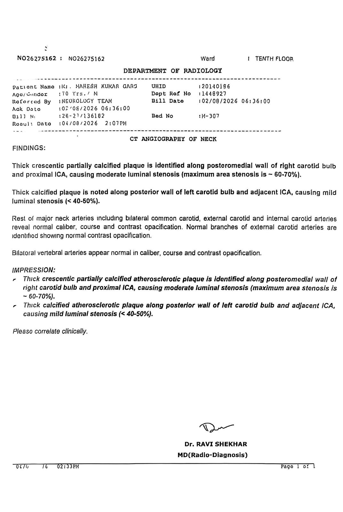
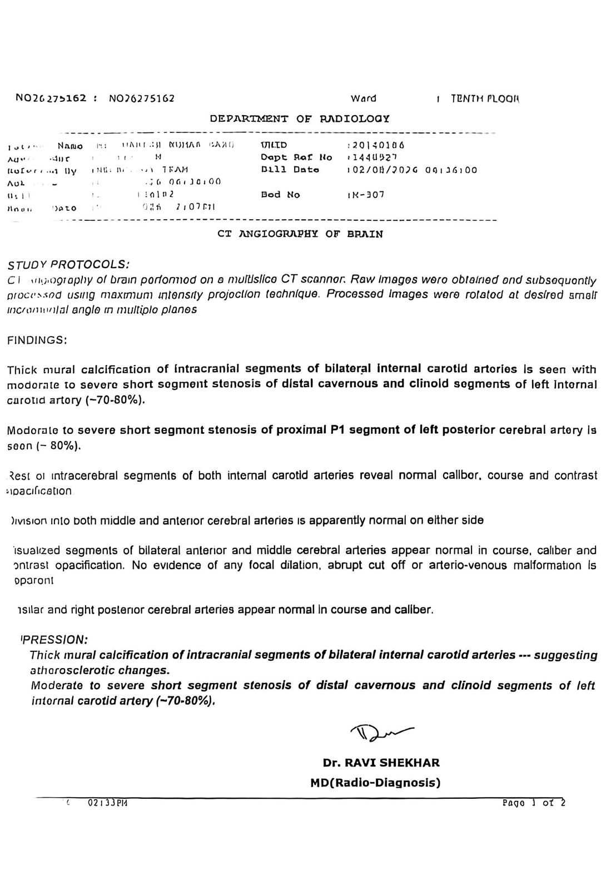
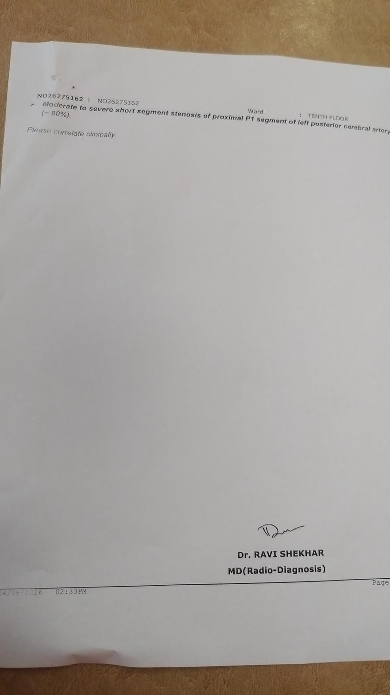

MRI Brain — formal report, 04/08Acute right posterior parietal infarct · chronic lacunar infarct · old left frontal encephalomalacia

Mr. Mahesh Kumar Garg, 70M, known Type 2 diabetic and hypertensive with an old CVA in 2004, presented on 1 August 2026 with sudden left-sided weakness, unsteadiness and disorientation. Imaging confirmed an acute right MCA territory infarct. CT angiography (04/08) found ~60–70% stenosis of the right carotid artery (neck) and, separately, ~70–80% stenosis of the left intracranial internal carotid artery and ~80% stenosis of the left posterior cerebral artery (PCA, P1 segment) — bilateral atherosclerotic disease. MRI brain (04/08) confirmed a new acute infarct in the right posterior parietal region, a chronic lacunar infarct in the right internal capsule, and old left frontal encephalomalacia consistent with the 2004 event, on a background of diffuse cerebral atrophy. The discharge diagnosis records the etiology as "LVAD vs ICAD" (large-vessel atherosclerotic disease vs. intracranial atherosclerotic disease) — left undetermined between the two by the treating team.
2D Echo showed a structurally normal heart (EF 55%, no intracardiac clot), and a 24-hour Holter showed no arrhythmia (0% AFib/AFlut) — a cardioembolic source is therefore considered unlikely. He was discharged stable on 5 August 2026 on dual antiplatelet therapy (aspirin + clopidogrel), high-dose statin, and diabetes control. Carotid stenting (DSA ± stenting) for the right carotid stenosis was discussed at discharge but deliberately deferred by the family, pending further opinion — this is the central open question.
The CT Angiography (neck + brain) and MRI Brain formal reports follow on the next pages. All other investigations from this admission are summarised as text on the final page(s); the underlying photographs of every original record are available on request.



| 12-lead ECG (01/08) | Normal sinus rhythm, HR 60, QTc 394 |
|---|---|
| 2D Echo & Colour Doppler | EF 55%, no intracardiac clot, normal LA, valves normal, mild age/BP-related wall thickening |
| 24-h Holter (03–04/08) | Avg HR 66bpm, min 48 / max 185bpm, 0 pauses >2.0s, 0% AFib/AFlut, no significant arrhythmia — no critical finding |
| NCCT Head (01/08) | Left frontal gliosis |
|---|---|
| EEG (03/08) | No epileptiform discharge; mild background slowing (7–8Hz theta) — expected in recovering brain, no seizure activity |
| Chest X-ray PA (01/08) | Clear, no oxygen support needed at any point |
|---|---|
| USG Whole Abdomen | Grade I fatty liver, prostatomegaly ~50cc |
| CBC | Hb 15.7, TLC 9580 (peaked 14,400 during admission, normalised by discharge), PLT 2.59L |
|---|---|
| KFT | Urea 24.5, Creatinine 0.94, Sodium 140.8, Potassium 4.19 — normal |
| LFT | SGOT 24.3, SGPT 15.1, ALP 84.5 — normal |
| HbA1c | 8.2% — poorly controlled T2DM, main modifiable stroke-risk driver |
| Lipid profile | LDL 108, HDL 36, TG 136 — above post-stroke target (<70), high-dose statin started |
| Vitamin B12 / D3 | 868 (excellent) / 67.2 (good) |
| CRP | <0.10 |
| Urine R/M | Nitrite positive, bacteria, budding yeast — treated with antibiotics + topical antifungal; resolved |
| Ecosprin 75 + Clopitab 75 | Dual antiplatelet, once daily 10pm |
|---|---|
| Atorva 80 | High-dose statin, once daily 10pm (raised from 40 in hospital) |
| Vilpower M 500 | Diabetes, 12-hourly |
| Brivgard 50 | Anti-seizure, 12-hourly — to be tapered at follow-up |
| Neurocetam Plus, Mednovit CD3, Pan 40, Syp. Looz | Brain-recovery support, vitamins, gastric protection, laxative |
Follow-up: Neurology OPD review advised within 7 days of discharge (by ~12 Aug 2026).